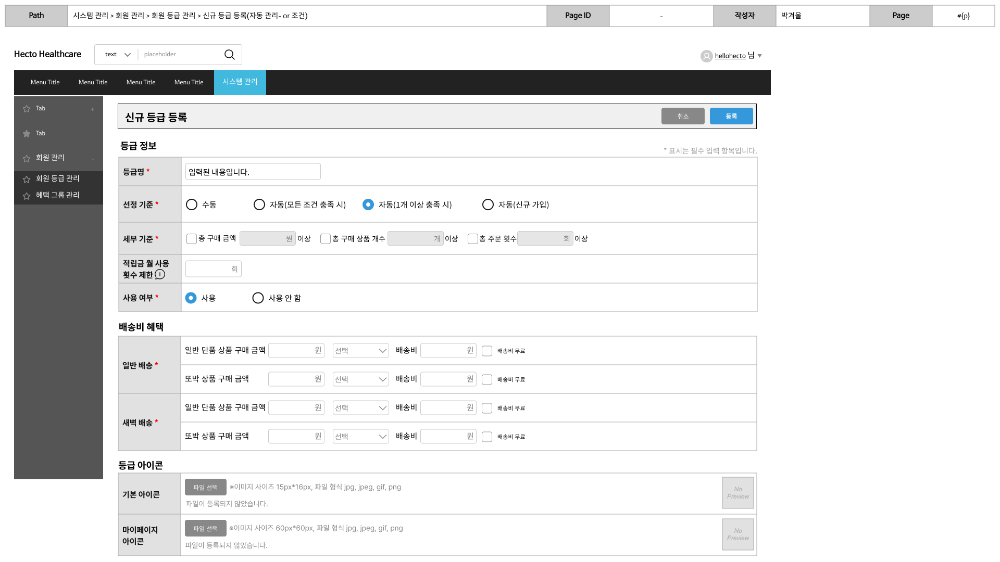
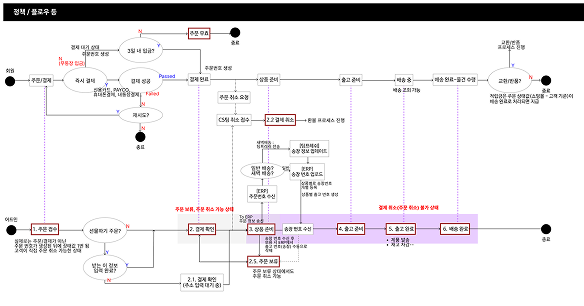

기존 사용 중이던 퍼스트몰 서비스 이용 종료를 앞두고 관리자 시스템 전면 개편 필요성을 느끼는 상황이었습니다. 하여 프론트단의 서비스에 맞춰 1) 관련 부서의 니즈를 파악하여 문제점을 도출하고, 2) 현행 프로세스를 재정립하고, 3) 추가 기능에 대한 고도화를 통해 자사몰 웹과 앱을 보다 원활히 운영할 수 있는 백오피스 환경을 구축하는 프로젝트입니다.
기획 의도


사용 도구
수행 업무 및 산출물 목록
기획자로서의 성장 포인트
퍼스트몰 종료라는 외부 원인이 존재하는 상황에서, 가장 중요한 것은 끊김 없는 서비스(자사몰)의 운영이었습니다. 기존에 명확한 기준 없이 부서별 독립적으로 운영되던 서비스들(반품/환불 등)이 많았지만, 개선되지 않았던 여러 문제점들을 다수의 인터뷰를 통해 확인할 수 있었고, 어떤 것이 왜 필요한지에 대한 배경을 확실히 알고 주문 프로세스에 대한 전체 라이프사이클을 기획할 수 있던 좋은 기회였다고 생각합니다. 또한, 사내 기획팀에 소속된 프리랜서로 근무하며 관련부서와의 인터뷰 및 질의가 굉장히 편하고 쉬웠다는 점에서 실제 작업 시 큰 도움이 되었다고 생각합니다. 계약기간이 정해져 있어 실제 런칭까지 보지 못한 점은 아쉬웠지만, 기능 단위별이 아닌 운영 흐름 및 하나의 프로세르를 통합하는 큰 기획을 진행하며 프로세스 설계에 대한 중요성을 다시 한 번 체감할 수 있었습니다.